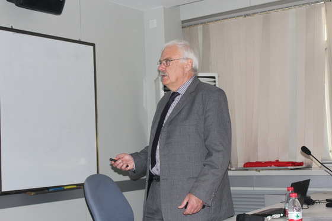
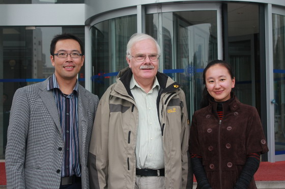

德国宇航中心(DLR)空气动力学研究所实验技术部主任Juergen Kompenhans博士应邀访问航空航天学院
Dr. J. Kompenhans from German Aerospace Center (DLR) visited Turbulence Control Lab
 |
2011年10月13日，德国宇航中心(DLR)空气动力学研究所实验技术部门主任Juergen Kompenhans博士应邀访问了航空航天学院，并做了题为Advanced optical and acoustic measurement techniques for aerodynamic research (空气动力学研究中的先进光学和声学测量技术)的学术报告。在长达两个小时的报告中，Kompenhans博士详细介绍了激光粒子测速(PIV)、压敏涂料(PSP)、热敏涂料(TSP)以及可替代激光的LED照明等技术的最新进展，并和来自运载学部、机械学部和建工学部的相关老师和研究生进行了热烈的讨论。 Dr. J. Kompenhans from German Aerospace Center visited Turbulence Control Lab of DUT on Oct 13, 2011. Dr. Kompenhans gave a two-hour long presentation on recent progress in the experimental techniques in DLR including particle image velocimetry, pressure sensitive paint, thermal sensitive paint. Dr. Kompenhans also gave suggestions on the experimental facilities currently used in the Turbulence Control Lab. Dr. Kompenhans is the director of the experimental aerodynamics section in DLR. He also serves as editors for several journals in the field of experimental fluid mechanics. |
 |